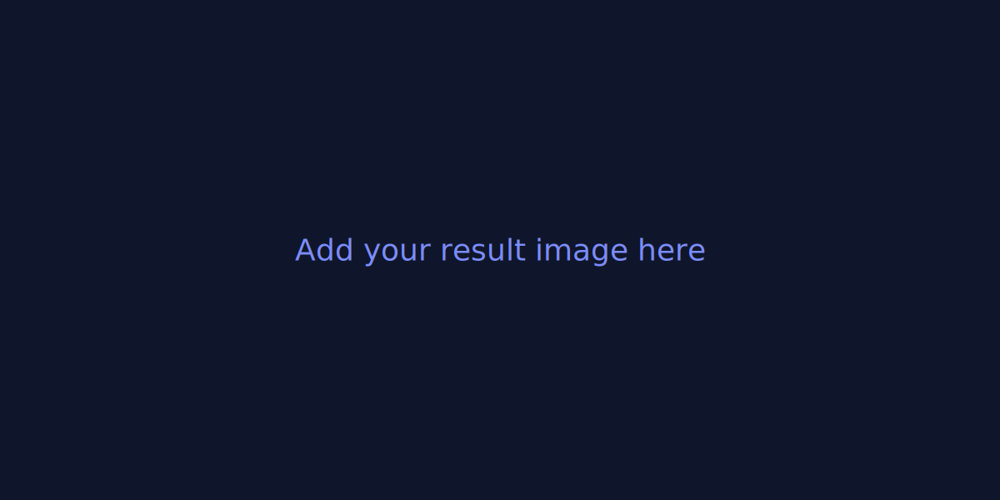

PROJECT-04 — Options Volatility — IV Smile & Surface
End‑to‑end research built as a teaching artifact: clearly framed objective, small but realistic dataset, method explained at a high‑school friendly level, and rigorous evaluation (risk, costs, sensitivity). Designed to empower under‑resourced students to learn quant hands‑on.
PythonPandasMatplotlibBacktesting
Overview & Results
Highlights below (images auto‑scale). All assets live in the repository so admissions officers can review everything without digging.
Key result / figure
 Additional visualization
Additional visualization
Code
Clean, commented notebooks and modules show the full pipeline (data → signals → evaluation). Reproducible with a single requirements set.